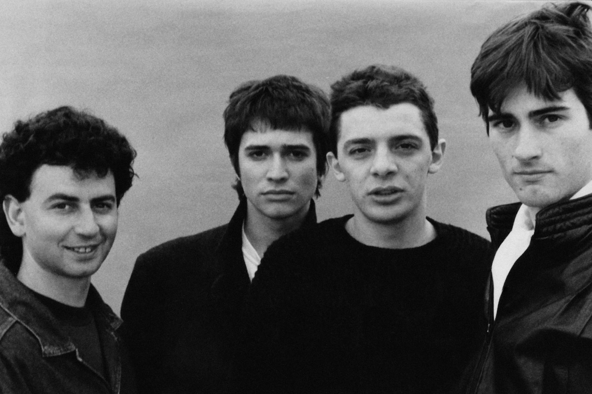
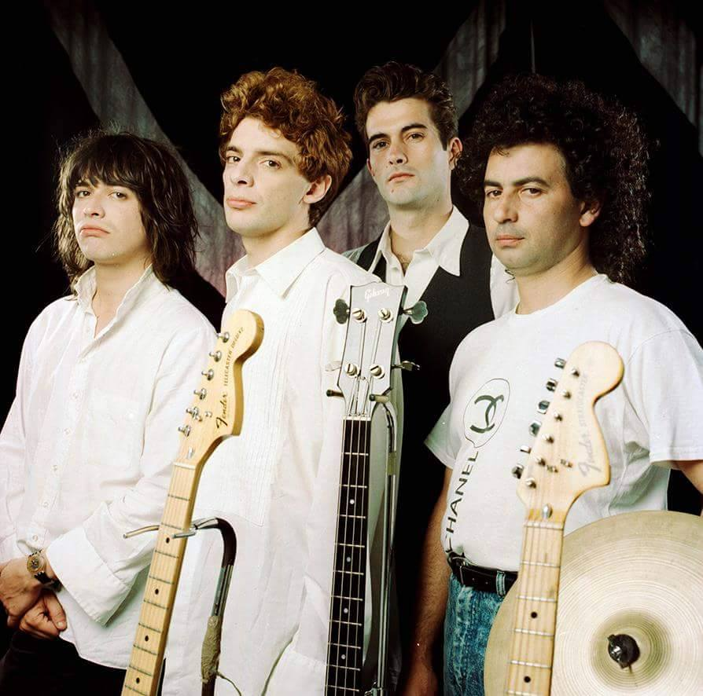
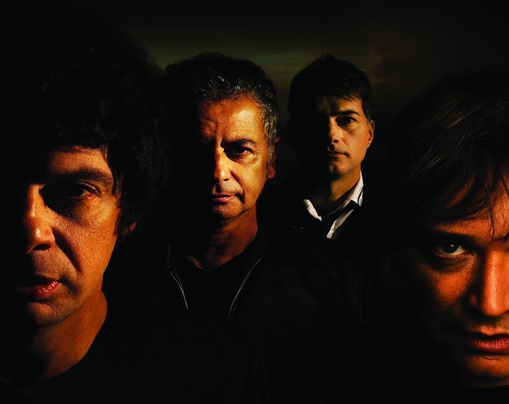

Historia de los Ratones
Juanse y Pablo “Maldito" Memi tocaban en la banda "La Puñalada constantes enfrentamientos entre ellos los condujo a la separación, y fue así como en 1983 convocaron a Pablo "Sarcófago" Cano y Rubén “Roy" Quiroga para crear una nueva banda, Ratones Paranoicos.1 La estética y el sonido similares a The Rolling Stones, tienen lugar desde el mismo momento en que Juanse decidió dedicarse a la música, y su semejanza con los Rolling Stones hizo que su sonido fuera particularmente reconocido. Quizás por esa rebeldía (mezcla de su personaje y de su propia personalidad) les costó encontrar una compañía discográfica que estuviera dispuesta a contratarlos. En 1986 logran lanzar el primer álbum, bajo el sello Umbrl (que también tenía a Los Violadores y a V8). Este material tuvo una escasa difusión, aunque incluía temas como "Bailando conmigo" y "Sucia estrella". Luego sería relanzado. Si bien eran considerados como "ese grupo que imita a The Rolling Stones", poco a poco fueron logrando perfilar una personalidad propia. En "Los chicos quieren rock" se profundiza este despegar de la copia, para instalarse más en una herencia musical. Este disco los lanza a la masividad e, incluso a llevarlos al lugar de "Grupo Revelación" en las encuestas. En un reportaje de Gloria Guerrero (junio de 1988) se le preguntaba a Juanse por qué a ellos se les permitía recrear a los Rolling Stones en un país que se caracteriza por criticar las copias. La respuesta fue: «Lo que pasa es que nosotros no nos manejamos con las réplicas. No nos metimos en un estilo así porque sí; lo asumimos con mucha responsabilidad. Hay mucha gente que siempre dependió de los Stones, la gente se quedó pegada con ese sonido, estaba buscando esa tendencia y la necesita. Yo vengo escuchando a los Rollings desde que tenía seis o siete años; era lo único a lo que me aferraba. Y lo vemos ahora en la gente que va a vernos, todos con sus remeras con las lenguas, su identificación absoluta con la necesidad de un rocanrol que sea más real»
"Furtivos" fue el siguiente álbum, en el que se incluía uno de sus grandes hits; "Rock del gato". Otros temas destacados que contenía el disco fue "Hasta que llegue el dolor". Su presentación tuvo lugar en el Estadio Obras. En 1990 los contrata la compañía Sony Music, con lo que aseguraban su permanencia en el "show business"; sin embargo, Juanse declaraba "Nosotros no tenemos nada que ver con el rock nacional. No me siento parte de él: digamos que hago rock'n roll y que soy argentino, que es otra cosa". Es así que el título del siguiente LP cobra vigencia: "Tómalo o déjalo". Andrew Loog Oldham -el exproductor de los Stones, Rod Stewart y Eric Clapton- viajó a Buenos Aires para trabajar en "Fieras lunáticas", Juanse y Oldham viajaron a Estados Unidos para la mezcla final del material. Un obsequio del productor al grupo es la inclusión de la melodía de "(I Can't Get No) Satisfaction", interpolada en el tema "Wah Wah"; en este disco también se destaca "Rock del pedazo". El 7 de noviembre de 1992, Keith Richards -guitarrista de los Rolling Stones- hacía su presentación en el Coca Cola Rock Festival, junto a su banda, The X-Pensive Winos. Como no podía ser de otra manera, el show fue abierto por los Ratones Paranoicos, con Pappo como guitarrista invitado. En diciembre de ese año, los Ratones son convocados para telonear a los Guns N' Roses en el Estadio de River Plate. En medio del show, Juanse tropieza, cae y se rompe una pierna: es retirado en camilla del escenario, con la multitud del Estadio de River atónita. Para "Hecho en Memphis", grabaron con Mick Taylor, guitarrista de los Stones a comienzos de los años 70. «Tuve una muy buena primera impresión de la banda -comentó Taylor-. Realmente suenan muy compactos. «Valió la pena». Entre sus sencillos destacados son: "Vicio", "Isabel" y "Cansado". Su momento de mayor popularidad lo consiguieron con la visita de los Rolling Stones a la Argentina en febrero de 1995, y sus cinco shows como teloneros en el Estadio de River. Hacia fin de año se lanzó un CD a modo de festejo por los diez años de la banda ("Raros Ratones"), que contó con versiones nunca antes editadas de "Sucio gas", "Carol" y "Destruida Roll", un tema inédito que había quedado al margen del primer disco. Juanse editó su primer álbum solista llamado "Expreso Bongo" en 1997, y los rumores sobre la separación de los Ratones corrieron por unas cuantas semanas. De hecho, un show en el Estadio Vélez Sársfield tuvo su punto fuerte de publicidad justamente en el hecho de ser anunciado como "el último". Este disco incluía una versión en castellano de "I Just Want To Make Love To You". Sin embargo, en 1998 volvieron a la escena porteña en el microestadio de Obras, con la presencia de Fabián Quintiero en lugar de Memi. Al año siguiente lanzaron "Electroshock". Le siguieron "Vivo Paranoico" (una recopilación en vivo) y "X16". En 2000 nace uno de sus más grandes éxitos, "Para Siempre", y en 2001 además hacen una versión dedicada a Diego Maradona. El 14 de marzo de 2002 tocaron en el Caracas Pop Festival, en Venezuela, siendo ubicados con un público inadecuado. El público presente ese día en el festival estaba principalmente por Korn y Papa Roach. A los pocos segundos de su primera canción, los metaleros asistentes, decepcionados, lanzaron objetos contra los artistas hasta que la banda se retiró. A mediados del 2003 editaron "Enigma", un EP de cinco tracks, con dos temas nuevos, dos covers y un remix de "Enlace", realizado por el DJ Diego Ro-K.
En 2003 vuelven a editar el álbum "Girando" y es presentado en el festival Quilmes rock en el año 2004, que contiene uno de sus máximos hits: "Sigue girando". Entre otras canciones destacadas, se encuentran "No me importa tu dinero", "El balcón de Julieta", o "La fuga", donde Los Ratones logran un gran sonido manteniendo su estética Stone que los caracteriza. "Inyectado de rocanrol vivo" fue registrado durante los shows en el estadio Obras durante 2005. Con producción de Pablo Guyot y Alfredo Toth, el material editado en CD y en DVD resume los veinte años de trayectoria de la banda. El corte difusión elegido fue "El vampiro". En octubre de 2007 Fabián Quintiero abandonó el grupo siendo sustituido por el bajista original, Pablo Memi.3 El regreso del bajista original Pablo Memi, tras diez años de ausencia, había llevado a los Ratones a experimentar una etapa retrospectiva que quedó plasmada en su último álbum de estudio, Ratones Paranoicos, lanzado en septiembre de 2009. Su relación con el mentor de los Stones, Andrew Loog Oldham, que estuvo presente en la producción de sus recordados de los noventa, “Fieras Lunáticas”, “La Nave”, “Hecho en Memphis”, “Extasis vivo” y “Planeta Paranoico” y luego volvió para colaborar con este último trabajo, fue fundamental en el desarrollo de su carrera y la construcción de su imagen proyectada mundialmente. El 7 de septiembre presentaron el disco en La Trastienda club. El 5 de abril del mismo año fueron teloneros de la banda de rock estadounidense Kiss en el festival "Quilmes Rock". En 2010 se presentaron en el Luna Park presentando su nuevo disco. El 9 de agosto de 2011 por medio de un comunicado de prensa, Juanse informó que abandonaba la banda. Sus compañeros inesperadamente se enteraron- al igual que el público- de su alejamiento, a través de los medios. Cano, Quiroga y Memi continuaron tocando juntos en Circo Paranoico. El 31 de mayo de 2017 anunciaron su regreso oficial en los medios, que concretraron el 16 de septiembre con una recital multitudinario en el Hipódromo Argentino de Palermo.